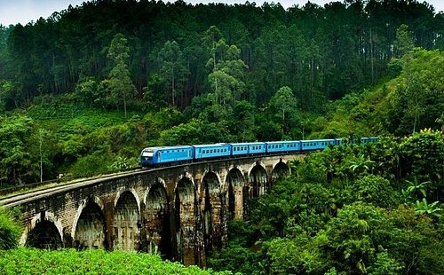
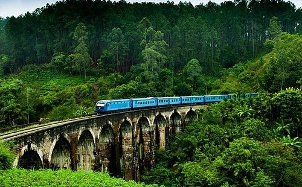

Select your favourite destination:

 


Kandy
Snuggled between the imposing mountains and verdant peaks are some of the best places to visit in Kandy that are defined by calmness and serenity. Known for spirituality and laid-back charm, Kandy has everything peaceful and balmy about it. The beautiful Sri Lankan city is also a popular attraction for Buddhists.